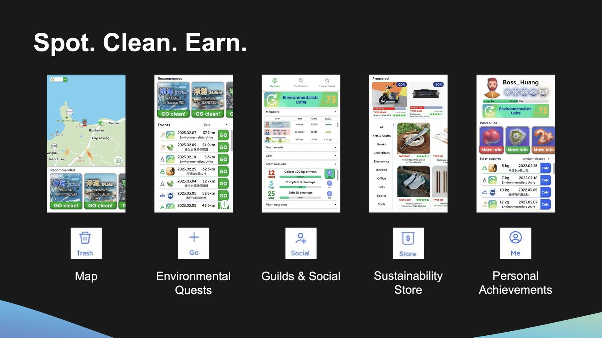
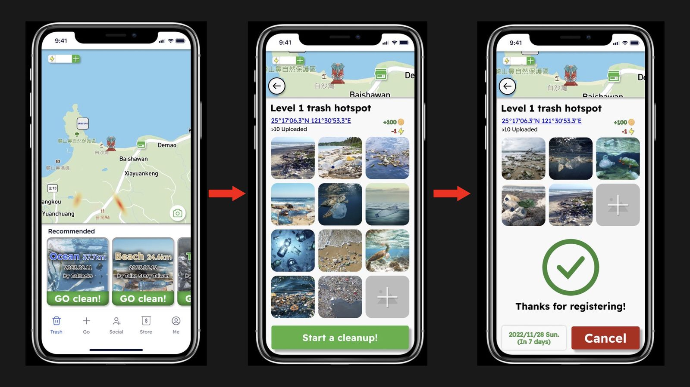
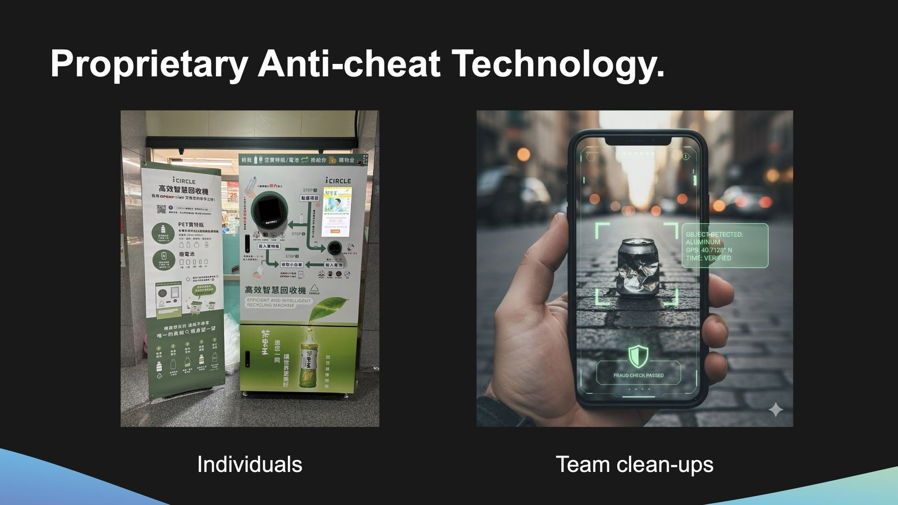
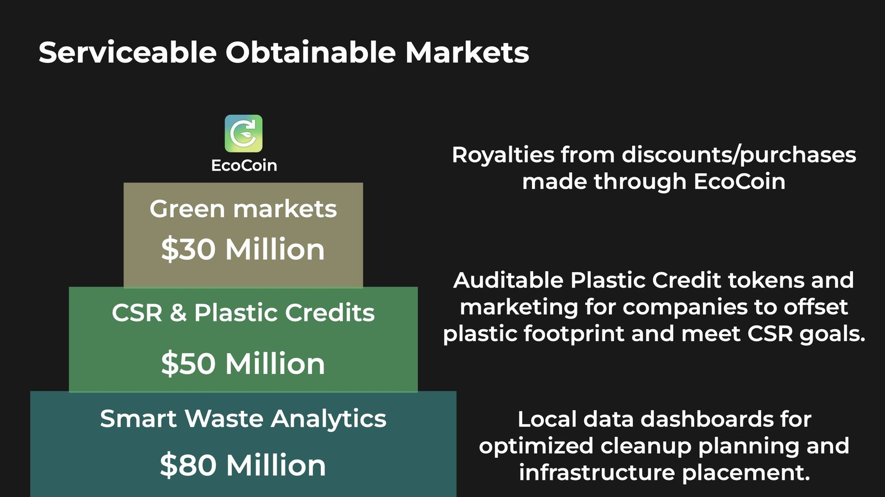
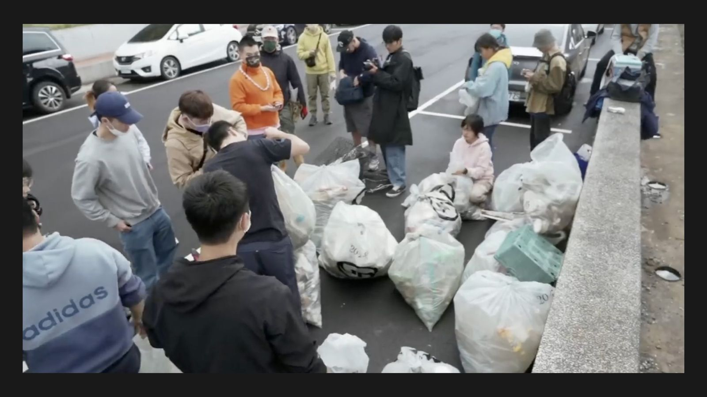
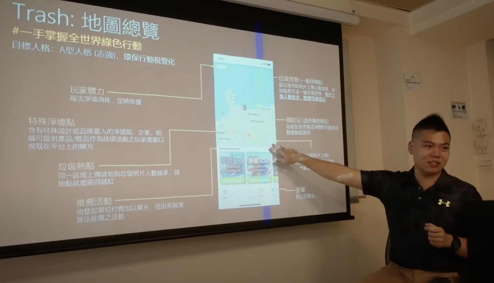

Two billion tons of waste a year, and the people who clean it up get nothing for it. Years of organizing beach cleanups taught me the bottleneck wasn’t willingness — it was that a cleanup is slow to start, hard to join, and rewards nobody. EcoCoin began as Trash GO, a Figma prototype that reached the Samsung Solve for Tomorrow finals against 2,000+ teams, and grew into a platform.
Founder and development lead: product, the token and incentive design, the data platform, and the pitch.
A map of trash hotspots, one-tap cleanup quests, guilds for teams, and a sustainability store — users earn eco-tokens for verified environmental action and redeem them for sustainable products and CSR services.
Proprietary verification for individual and team cleanups, so a token always maps to something that actually left the ground.
A global resource database with real-time material flow, supply chain and price predictions for six major industries — the intelligence layer that lets companies buy plastic credits and plan infrastructure.






EcoCoin is the thread that connects the maker projects in my Origins to the strategy work I do now: a hardware kid’s instinct to build the thing, pointed at a market problem instead of a workbench one.